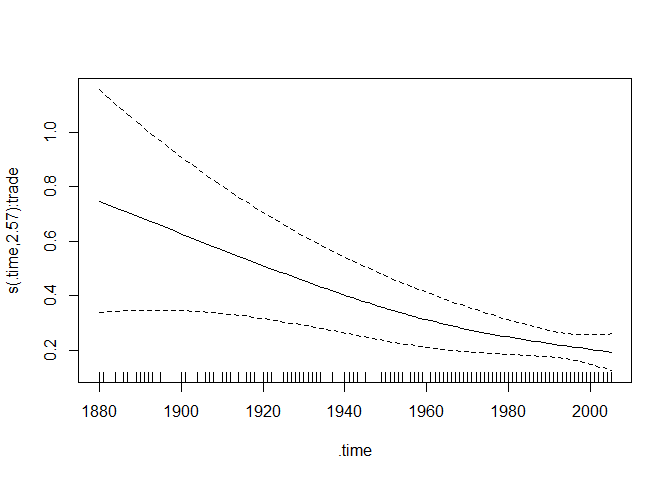
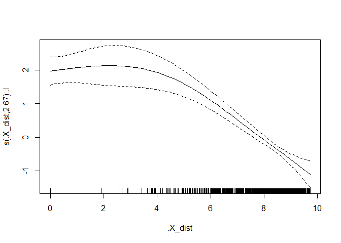

Practical 2: Alien Species Invasions
Instructions.
You may follow the tutorial directly on this page. Otherwise, if you wish to run things locally and play around with the code, you may download the R/Rmd files below:
- Alien-Species-Invasion.R — R script
- Alien-Species-Invasion.Rmd — R Markdown source
Introduction
In this practical, we will show how to use relational event models beyond linear effect specification, in the context of the first time invasion of species into regions over time. (Boschi et al., 2025). We will show how to fit models with time-varying, non-linear and random effects to gain insight on how climatological, economical and geographical aspect might explain the dynamics of this ecological process.
1. Package requirements and setup
If you are running this tutorial locally, make sure to uncomment the
remotes::install_github command below to install the package.
# install.packages("remotes")
# install.packages("pbapply")
# remotes::install_github("franciscorichter/amore")
library(amore)
library(pbapply)
2. Data uploading, inspection and cleaning
Load the input data input00.RData located in the 01-Data/01-Inputs
folder. Inspect the original data contained in . Have a look at the
following columns of the object FR: LifeForm, Taxon, Region,
FirstRecord, Source.
load(file="01-Data/01-Inputs/input00.RData")
head(FR[,c("LifeForm", "Taxon",
"Region", "FirstRecord",
"Source")])
## LifeForm Taxon Region FirstRecord
## 1 Algae Acanthophora muscoides Turkey 1986
## 2 Algae Acanthophora nayadiformis Cyprus 1997
## 3 Algae Acanthophora nayadiformis Turkey 1970
## 4 Algae Acanthophora spicifera Hawaiian Islands 1952
## 5 Algae Acetabularia caliculus Israel 1943
## 6 Algae Acetabularia caliculus Spain 1957
## Source
## 1 Cinar et al. (2005)
## 2 DAISIE
## 3 Cinar et al. (2005)
## 4 Carlton & Eldrege (2009)
## 5 DAISIE
## 6 DAISIE
We firstly show how data arrives from the original source (Seebens et
al., 2018). These data involve 17 life forms. For each record, we are
able to identify the species (Taxon) of a certain lifeform
(Lifeform) that is invading a region (Region) in which it was
not native and was not seen before the reported year
(FirstRecord). The Alien Species First Records Database collects
several sources: the source of each FR is reported in the column
Source.
A first record (FR) is the year t when a (non-native) species s
first invades region r. The following dataset, FR, already contains
information we need to interpret first records as relational events
(s, r, t).
Particularly, the sender set VS is composed of the unique recorded species, while regions of the world (countries and islands) form the receiver set VR. The time window spans from t0 = 1880 to T = 2005.
A species’ native range (NR) is the collection of areas where it is
indigenous. Slightly more liberally, we refer to native range as the set
of sites where a species was already present before the start of the
analysis period, which in this context is 1880. The object native
contains such information.
native[sample(1:nrow(native), 10), c("species", "region")]
## species region
## 1033014 Vespula vulgaris United States
## 1026455 Curculio conicus Libya
## 1032254 Vespula germanica Luxembourg
## 1020394 Tomicus erosus Iran
## 995806 Anastrepha suspensa Haiti
## 1007187 Euwallacea fornicatus China
## 1009337 Hypogeococcus pungens Bolivia
## 1030550 Solenopsis richteri Uruguay
## 1009058 Hylastes ater Russia
## 1037757 Xylosandrus crassiusculus Thailand
This information is crucial for the definition of the risk set. If a species is native in a region, then such dyad is never at risk of occurring ever during our analyzed time window. Additionally, the relational event is non-recurrent, namely, the event first record, for its definition, occurs only once. This also means that the risk set is reducing over time: once the event is observed, it cannot be sampled anymore as a non-event. Also, if interested in computing endogenous covariates (that depend on prior interactions), such information is necessary for the events occurring at the beginning (1880).
In this tutorial, in order to make the analysis easy to reproduce, we
focus on insects only. first_records contains the insect FRs of
interest.
head(first_records[,c("year","lf",
"species",
"region")])
## year lf species region
## 9337 1880 Insects Adelges nordmannianae Switzerland
## 15937 1881 Insects Pheidole megacephala France
## 16225 1884 Insects Pineus pini New Zealand
## 12792 1886 Insects Eulachnus rileyi United States
## 14019 1887 Insects Linepithema humile Portugal
## 11797 1889 Insects Ctenarytaina eucalypti New Zealand
We know format the data in a convenient manner for analysis using
amore package. We need to make sure that both the data structures for
the sequence of relational events and the set of dyads not at risk at
the beginning of the time-window contain a sender and receiver
column.
event_log <- standardize_event_log(first_records[,c(1,3:4)],
sender_col = "species",
receiver_col = "region",
time_col = "year")
head(event_log)
## sender receiver time
## 1 Adelges nordmannianae Switzerland 1880
## 2 Pheidole megacephala France 1881
## 3 Pineus pini New Zealand 1884
## 4 Eulachnus rileyi United States 1886
## 5 Linepithema humile Portugal 1887
## 6 Ctenarytaina eucalypti New Zealand 1889
native_df<-native[, c("species", "region")]
colnames(native_df)<-c("sender", "receiver")
head(native_df)
## sender receiver
## 994830 Adelges piceae Turkey
## 994831 Adelges piceae Switzerland
## 994832 Adelges piceae Greece
## 994833 Adelges piceae Romania
## 994834 Adelges piceae Serbia
## 994835 Adelges piceae Germany
In addition we have information on 2 dyadic attribute, distance and trade between regions, and on a species-level attribute, temperature.
Regarding climate, data_temperature contains the names of the
countries in the first column and the average values of near-surface air
temperature in the second column (Watanabe et al., 2011).
head(data_temperature)
## X temp
## 1 Turkey 12.76058
## 2 Cyprus 19.20573
## 3 Hawaiian Islands 23.70886
## 4 Israel 19.81427
## 5 Spain 14.10500
## 6 Bulgaria 13.91744
For trade, the source information, derived from Barbieri et al. (2009),
data_trade reports trade flows among countries.
head(data_trade)
## X donorID recipientID year transfer FromRegion ToRegion
## 1 1 1 2 2007 0 Afghanistan Albania
## 2 2 1 2 2008 0 Afghanistan Albania
## 3 3 1 2 2009 0 Afghanistan Albania
## 4 4 1 3 1962 0 Afghanistan Algeria
## 5 5 1 3 1963 0 Afghanistan Algeria
## 6 6 1 3 1964 0 Afghanistan Algeria
Distance between regions is computed referring to the closest borders
and consequently is equal to zero for neighbours. Source data for this
driver consists of the R package geosphere (Hijmans et al.,
2017).data_distance is a matrix with dimension names referring to the
regions. The corresponding element in the matrix reports the distance
between the two.
data_distance[1:3,1:3]
## Turkey Cyprus Hawaiian Islands
## Turkey 0.00000 95.54336 12894.77
## Cyprus 95.54336 0.00000 13791.72
## Hawaiian Islands 12894.76706 13791.71607 0.00
We will leverage this information to investigate the effect of temperature, trade and distance in the dynamics of species invasion.
3. Case-control sampling from the risk set
To perform inference by maximizing the sampled partial likelihood through the fitting of a degenerate logistic model we need to perform case-1-control sampling. In particular, for each observed event, we sample uniformly at random from the risk set at the time of the event, a non-event dyad.
Given the time granularity, we have that multiple invasions occur the same year. In order to address these ties, for each event, we exclude from the risk set at that time, all the first records that occurred in the same year.
set.seed(1234)
cc <- sample_non_events(event_log,
n_controls = 1, # 1 control is default
scope = "all",
mode = "two",
risk = "remove", # drops past + concurrent
exclude_pairs = native_df[,1:2]) ### excludes native dyads
head(cc)
## stratum event sender receiver time
## 1 1 1 Adelges nordmannianae Switzerland 1880
## 2 1 0 Aonidomytilus albus Greece 1880
## 3 2 1 Pheidole megacephala France 1881
## 4 2 0 Epiphyas postvittana Jordan 1881
## 5 3 1 Pineus pini New Zealand 1884
## 6 3 0 Xyleborus glabratus Slovakia 1884
Notice the long format of the case-control dataset: events and
non-events appear on different rows. In particular each event row
(event = 1) is followed by the corresponding sample non-event
(event = 0).
4. Computing endogenous covariates leveraging exogenous information
We now will combine the exogenous attributes with the relational event info and define 3 endogenous covariates, describing aspects of trade, distance and temperature that might explain invasion dynamics.
Climate dissimilarity (via temperature). This covariate, given a relational event (and all the relevant information), computes the minimum temperature difference between the region involved and the previously invaded regions by the considered species. It depends on both the sender and the receiver of the event and can therefore be considered a dyad-level covariate. It is time-dependent but does not incorporate information about internal time. It is endogenous, as it relies on the regions previously invaded by the species, but it also incorporates exogenous information.
Trade. In the existing literature, international trade has been recognized as a key factor in explaining the spread of alien species. Here, we consider trade as the yearly commerce between already-invaded territories and the involved region. This also is a dyad-level, endogenous covariate.
Distance. In this instance, given a relational event (and all the relevant information that is required), we compute the shortest distance among the regions in which the species is already present at that time and log-transform it.
Notice that the endogenous component is common to all of them and it
involves past invaded regions by the considered species. For the
invasions occurring in 1880, the past invaded regions are the ones
included in native for that species. To make sure the function treats
it as such we hard-code a time column for these dyads with value 1879.
In addition, note that such covariate computation is to be done for both
events and non-events. For the latter ones, the past information must
always be only relative the actual observed events.
## Invaded regions ####
native_df<-data.frame(native_df, time = "1879")
feats <- compute_endogenous_features(cc, stats = "sender_receivers_set",
history_log = event_log, prior_log = native_df)
## remove current region to avoid zero difference
feats$invaded<- mapply(setdiff,feats$sender_receivers_set,feats$receiver)
print(feats[1:3,])
## stratum event sender receiver time
## 1 1 1 Adelges nordmannianae Switzerland 1880
## 2 1 0 Aonidomytilus albus Greece 1880
## 3 2 1 Pheidole megacephala France 1881
## sender_receivers_set
## 1 Georgia, Turkey, Russia, Germany
## 2 Grenada, Colombia, British Virgin Islands, Guadeloupe, Jamaica, Haiti, Antigua and Barbuda, Guyana, Cuba, Virgin Islands, US, Saint Vincent and the Grenadines, Honduras, Suriname, Dominica, Martinique, Dominican Republic, Brazil, French Guiana, Argentina, Saint Lucia, Puerto Rico, Saint Kitts and Nevis, Trinidad and Tobago, Montserrat, Peru, Mexico
## 3 Guinea, Sao Tome and Principe, Zanzibar Island, Eritrea, Ethiopia, Sudan, Kenya, Nigeria, Sierra Leone, Congo, Democratic Republic of the, Ghana, Angola, Cameroon, Gabon, Senegal, Mozambique, South Africa, Zimbabwe, Madeira
## invaded
## 1 Georgia, Turkey, Russia, Germany
## 2 Grenada, Colombia, British Virgin Islands, Guadeloupe, Jamaica, Haiti, Antigua and Barbuda, Guyana, Cuba, Virgin Islands, US, Saint Vincent and the Grenadines, Honduras, Suriname, Dominica, Martinique, Dominican Republic, Brazil, French Guiana, Argentina, Saint Lucia, Puerto Rico, Saint Kitts and Nevis, Trinidad and Tobago, Montserrat, Peru, Mexico
## 3 Guinea, Sao Tome and Principe, Zanzibar Island, Eritrea, Ethiopia, Sudan, Kenya, Nigeria, Sierra Leone, Congo, Democratic Republic of the, Ghana, Angola, Cameroon, Gabon, Senegal, Mozambique, South Africa, Zimbabwe, Madeira
The following code computes, for each event/non-event, the minimum absolute difference between the current region and all past invaded regions by the considered species. We refer to it as climate dissimilarity.
## Temperature ####
compound_region_map <- list(
"USACanada" = c("United States", "Canada")
)
get_temp <- function(region,compound_areas = compound_region_map) {
if (region %in% data_temperature$X) {
return(data_temperature[data_temperature$X == region, "temp"][1])
}
if (region %in% names(compound_areas)) {
parts <- compound_region_map[[region]]
temps <- data_temperature[data_temperature$X %in% parts, "temp"]
if (length(temps) > 0) return(mean(temps, na.rm = TRUE))
}
return(NA_real_)
}
dt_value <- mapply(function(invaded_regions, current_region) {
if (length(invaded_regions) == 0) return(NA_real_)
avg_temp_invaded <- sapply(invaded_regions, get_temp)
avg_temp_interest <- get_temp(current_region)
if (is.na(avg_temp_interest) || all(is.na(avg_temp_invaded)))
return(NA_real_)
min(abs(avg_temp_invaded - avg_temp_interest), na.rm = TRUE)
}, feats$invaded, feats$receiver)
feats$temp <- dt_value
The following code computes the trade variable that captures the log-transformed sum of the most recent recorded trade flows into a region from each previously invaded region. A few notes on data pre-processing:
-
Negative values of trade are considered equal to 0.
-
When a pair of nations is never mentioned in the source data, the trade volume is presumed to be 0, based on the idea that if a value is never recorded, it should be negligible.
-
When the pair is mentioned but there is a non-imputed gap at the time of interest, the trade flow is evaluated based on the latest available year for which information is available.
-
Because trade varies by orders of magnitude, we take a log-transformation for the analysis.
## Trade ####
t <- which(data_trade$transfer < 0)
data_trade$transfer[t] <- 0
trade_value <- pbmapply(function(invaded_regions, current_region, y) {
trade_funct_new <- function(to_region) {
if (length(invaded_regions) == 0) return(0)
x <- data_trade[
data_trade$FromRegion %in% invaded_regions &
data_trade$ToRegion == to_region &
data_trade$year <= y,
]
if (nrow(x) == 0) return(0)
most_recent <- aggregate(x$year, list(x$FromRegion), FUN = max)
trade_vals <- mapply(function(region, max_year) {
x$transfer[x$FromRegion == region & x$year == max_year]
}, most_recent[, 1], most_recent[, 2])
log(sum(unlist(trade_vals), na.rm = TRUE) + 1)
}
if (current_region == "USACanada") {
mean(c(trade_funct_new("United States"),
trade_funct_new("Canada")))
} else {
trade_funct_new(current_region)
}
}, feats$invaded, feats$receiver, feats$time)
feats$trade<- trade_value
Now we account for the geographic aspect, through distance, which is compute as the logged minimum geographic distance between the current region and any previously invaded region.
## Distance ####
distance_value <- pbmapply(function(invaded_regions, current_region, y) {
if (length(invaded_regions) == 0) return(NA_real_)
distances <- data_distance[current_region, invaded_regions]
log(min(distances, na.rm = TRUE) + 1)
}, feats$invaded, feats$receiver, feats$time)
feats$dist <- distance_value
For fitting the models, it is convenient to transform the case-1-control
dataset and related covariates, contained in feats from long-format
(event on one row and corresponding non-event in the following row) to
wide-format, in which the event and non-event appear in the same row.
cc_wide <- widen_case_control(feats, case = "event",stratum = "stratum")
head(cc_wide)
## stratum sender_ev sender_nv receiver_ev
## 1 1 Adelges nordmannianae Aonidomytilus albus Switzerland
## 2 10 Simosyrphus grandicornis Elatobium abietinum Hawaiian Islands
## 3 100 Phloeomyzus passerinii Bostrichus micans United States
## 4 101 Wasmannia auropunctata Phlyctinus callosus Bahamas
## 5 102 Xyleborus germanus Epiphyas postvittana Germany
## 6 103 Cerataphis lataniae Phylacteophaga froggatti Germany
## receiver_nv time_ev time_nv d_time temp_ev temp_nv d_temp trade_ev
## 1 Greece 1880 1880 0 0.73696945 1.365423 -0.6284538 3.735030
## 2 Morocco 1892 1892 0 1.16153585 5.598858 -4.4373218 0.000000
## 3 Barbados 1950 1950 0 0.56376192 29.418563 -28.8548011 7.193977
## 4 Aruba 1951 1951 0 0.01698433 7.596145 -7.5791606 2.200866
## 5 Jordan 1951 1951 0 0.56376192 2.973945 -2.4101828 5.471700
## 6 Cuba 1952 1952 0 1.54595500 3.482238 -1.9362830 4.827934
## trade_nv d_trade dist_ev dist_nv d_dist
## 1 0.0000000 3.7350301 0.000000 8.927186 -8.927186
## 2 0.7883392 -0.7883392 8.910215 6.741775 2.168439
## 3 0.0000000 7.1939768 8.085052 9.054070 -0.969018
## 4 0.0000000 2.2008664 5.197644 9.241599 -4.043955
## 5 0.0000000 5.4717001 6.821410 8.147374 -1.325964
## 6 0.0000000 4.8279338 0.000000 9.557024 -9.557024
4. Fitting models with flexible effects using degenerate logistic trick
We will now fit 3 separate models, each of them with one of the 3 covariates and specify different type of effects.
Let us start with a model that assume a linear effect on climatic dissimilarity:
## Fixed linear effect of Temperature ####
m1_only_temp_l<- rem(~ temp, data = cc_wide, method = "gam")
summary(m1_only_temp_l)
##
## Family: binomial
## Link function: logit
##
## Formula:
## one ~ -1 + temp
##
## Parametric coefficients:
## Estimate Std. Error z value Pr(>|z|)
## temp -0.14915 0.02002 -7.448 9.44e-14 ***
## ---
## Signif. codes: 0 '***' 0.001 '**' 0.01 '*' 0.05 '.' 0.1 ' ' 1
##
##
## R-sq.(adj) = -Inf Deviance explained = -Inf%
## UBRE = 0.2584 Scale est. = 1 n = 586
The coefficient for climatic dissimilarity, which remains constant over time, is negative. This indicates that the rate of invasions tends to increase if the species has already invaded countries with similar temperatures.
Now consider a model with a time-varying effect for trade. Note the
effect changes over time, potentially non-linearly, but it is linear in
the covariate. tv() and the specification of time=... are required
for such an effect, when using rem() function.
## Time-varying linear effect ####
m2_only_trade_tv<- rem(~ tv(trade),time = "time_ev", data = cc_wide, method = "gam")
summary(m2_only_trade_tv)
##
## Family: binomial
## Link function: logit
##
## Formula:
## one ~ -1 + s(.time, by = trade)
##
## Approximate significance of smooth terms:
## edf Ref.df Chi.sq p-value
## s(.time):trade 2.565 2.936 121.3 <2e-16 ***
## ---
## Signif. codes: 0 '***' 0.001 '**' 0.01 '*' 0.05 '.' 0.1 ' ' 1
##
## R-sq.(adj) = -Inf Deviance explained = -Inf%
## UBRE = 0.093859 Scale est. = 1 n = 586
plot(m2_only_trade_tv)

The effect of trade is positive throughout but, appears to be decreasing over the time period. So greater trade flows between regions, increase the chance of an invasion but such trend used to be strongeri in the past. It could be the result of introduction of international norms and laws that regulate non-indigenous species importation.
We now fit a model with a non-linear effect of distance. Notice the
nl() to specify it.
## Non-linear effect of distance ####
m3_only_dist_nl<- rem(~ nl(dist), data = cc_wide, method = "gam")
summary(m3_only_dist_nl)
##
## Family: binomial
## Link function: logit
##
## Formula:
## one ~ -1 + s(.X_dist, by = .I)
##
## Approximate significance of smooth terms:
## edf Ref.df Chi.sq p-value
## s(.X_dist):.I 2.67 3.241 153 <2e-16 ***
## ---
## Signif. codes: 0 '***' 0.001 '**' 0.01 '*' 0.05 '.' 0.1 ' ' 1
##
## R-sq.(adj) = -Inf Deviance explained = -Inf%
## UBRE = -0.037494 Scale est. = 1 n = 586
plot(m3_only_dist_nl)

From the estimated non-linear effect, which presents an overall descreasing trend, we have that the greater the distance between 2 countries the less likely it is for species to invade from one to other.
We now consider a model with a sender-level random intercept. The
purpose of random effects is to account for node/dyad-level
heterogeneity. In this case, the assumption is that not all species are
the same, in the sense that some might have a tendency to invade more
than others. Such a random intercept accounts for that and is specified
in the code using re():
m4_only_sender_re<- rem(~ re(sender), data = cc_wide, method = "gam")
summary(m4_only_sender_re)
##
## Family: binomial
## Link function: logit
##
## Formula:
## one ~ -1 + s(.RE_sender, by = .I, bs = "re")
##
## Approximate significance of smooth terms:
## edf Ref.df Chi.sq p-value
## s(.RE_sender):.I 66.17 113 187.7 <2e-16 ***
## ---
## Signif. codes: 0 '***' 0.001 '**' 0.01 '*' 0.05 '.' 0.1 ' ' 1
##
## R-sq.(adj) = -Inf Deviance explained = -Inf%
## UBRE = 0.090173 Scale est. = 1 n = 586
re.species <- coefficients(m4_only_sender_re)
#### rem with re() effect specification fits a random intercept based on the specified group var
#### it handles factor encoding internally which renders used of output less intuitive.
#### the following replicates the mapping from group var format to factor in order to print results in the original format
ev <- cc_wide[["sender_ev"]]
nv <- cc_wide[["sender_nv"]]
fmat <- factor(c(as.character(ev), as.character(nv))) # Replicate what rem() does internally
names(re.species) <- levels(fmat) # The mapping: index 1 = levels(fmat)[1], index 2 = levels(fmat)[2], etc.
The 5 most and less invasive species:
print(sort(re.species, decreasing = TRUE)[1:5])
## Frankliniella occidentalis Bactrocera invadens
## 2.274299 1.639043
## Maconellicoccus hirsutus Cinara cupressi
## 1.580303 1.572862
## Linepithema humile
## 1.412004
print(sort(re.species)[1:5])
## Curculio conicus Euwallacea fornicatus Aonidomytilus albus
## -1.216330 -1.215159 -1.115053
## Phylacteophaga froggatti Xylosandrus compactus
## -1.111348 -1.078661
We conclude this section by fitting a model with all 4 effects combined and perform model comparison using AIC.
## Full model ####
m5_full <- rem(~ temp +
tv(trade) +
nl(dist) +
re(sender), time = "time_ev", data = cc_wide, method = "gam")
aic_table <- data.frame(
model = c("dt_only", "tr_only", "d_only", "sp_only", "complete"),
AIC = c(AIC(m1_only_temp_l), AIC(m2_only_trade_tv), AIC(m3_only_dist_nl),
AIC(m4_only_sender_re), AIC(m5_full))
)
aic_table <- aic_table[order(aic_table$AIC), ]
print(aic_table)
## model AIC
## 5 complete 443.2659
## 3 d_only 564.0287
## 4 sp_only 638.8412
## 2 tr_only 641.0017
## 1 dt_only 737.4233
Among the 5 fitted models, the complete one has better predictive performance.
References
-
Barbieri, K., Keshk, O. M. G., & Pollins, B. M. (2009). Trading data: Evaluating our assumptions and coding rules. Conflict Management and Peace Science, 26(5), 471–491. https://doi.org/10.1177/0738894209343887
-
Boschi, M., Juozaitienė, R., & Wit, E. C. (2026). Mixed additive modelling of global alien species co-invasions of plants and insects. Journal of the Royal Statistical Society Series C: Applied Statistics, 75(1), 57–78. https://doi.org/10.1093/jrsssc/qlaf034
-
Hijmans, R. J., Karney, C., Williams, E., & Vennes, C. (2017). geosphere: Spherical trigonometry (R package version 1.5-7). CRAN. https://cran.r-project.org/web/packages/geosphere/index.html
-
Juozaitienė, R., Seebens, H., Latombe, G., Essl, F., & Wit, E. C. (2023). Analysing ecological dynamics with relational event models: The case of biological invasions. Diversity & Distributions, 29(10), 1208–1225. https://doi.org/10.1111/ddi.13752
-
Pyšek, P., Hulme, P. E., Simberloff, D., Bacher, S., Blackburn, T. M., Carlton, J. T., Dawson, W., Essl, F., Foxcroft, L. C., & Genovesi, P. (2020). Scientists’ warning on invasive alien species. Biological Reviews, 95(6), 1511–1534. https://doi.org/10.1111/brv.12627
-
Seebens, H., Blackburn, T. M., Dyer, E. E., Genovesi, P., Hulme, P. E., Jeschke, J. M., Pagad, S., Pyšek, P., van Kleunen, M., Winter, M., Ansong, M., Arianoutsou, M., Bacher, S., Blasius, B., Brockerhoff, E. G., Brundu, G., Capinha, C., Causton, C. E., Celesti-Grapow, L., … Essl, F. (2018). Global rise in emerging alien species results from increased accessibility of new source pools. Proceedings of the National Academy of Sciences, 115(10), E2264–E2273. https://doi.org/10.1073/pnas.1719429115
-
Watanabe, S., Hajima, T., Sudo, K., Nagashima, T., Takemura, T., Okajima, H., Nozawa, T., Kawase, H., Abe, M., Yokohata, T., Ise, T., Sato, H., Kato, E., Takata, K., Emori, S., & Kawamiya, M. (2011). MIROC-ESM 2010: Model description and basic results of CMIP5-20c3m experiments. Geoscientific Model Development, 4(4), 845–872. https://doi.org/10.5194/gmd-4-845-2011